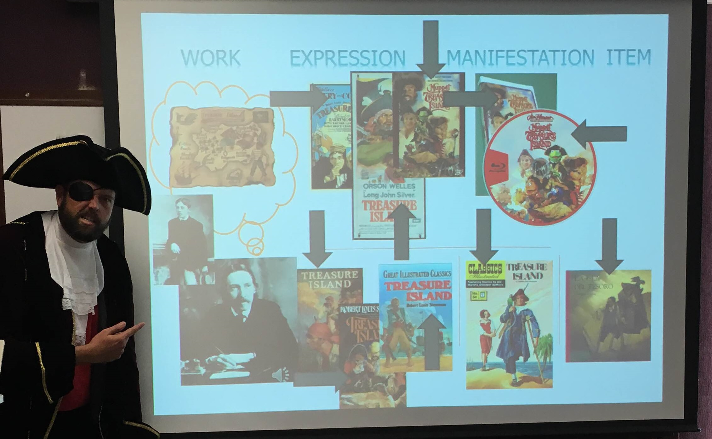

Teaching

Wade Bishop is an associate professor in the School of Information Sciences at the University of Tennessee. Bishop has an M.L.I.S. from the University of South Florida and a Ph.D. from Florida State University. His research focus is on geographic information (GI) organization, access and use, as well as the study of geospatial occupations, education, and training. He has other research expertise that includes physical access for users to U.S. public libraries (using Geographic information Systems (GIS)) and the evaluation of many other services and resources in academic and public libraries. He has professional experience as an assistant professor, teacher, academic librarian, graduate research associate, teaching assistant, and instructor.
Taylor Hixson, Librarian for Geospatial Services at New York University Abu Dhabi (September 25th, 2018)